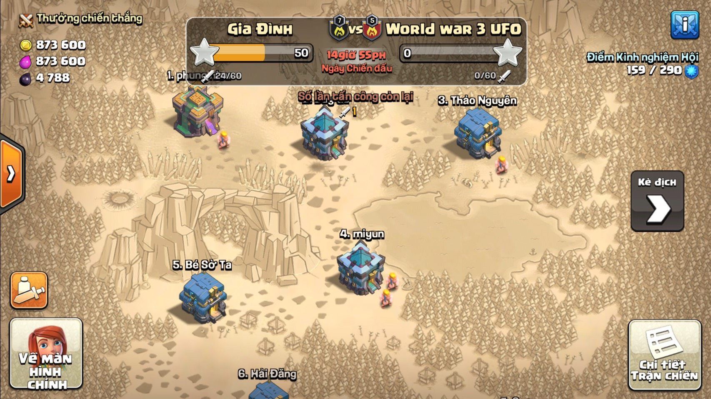

Clash of clans được phát triển bởi Supercell, một công ty từng có một tựa game nổi tiếng khác là Hay Day. Trò chơi mất sáu tháng để phát triển với lối chơi ít thay đổi trong quá trình phát triển....Trò chơi được phát hành trên iOS vào ngày 2 tháng 8, 2012, và trên Google Play của Android vào ngày 7 tháng 10, 2013.

Chào mừng Chỉ huy đến với Căn cứ Thợ xây! Miền đất mới thú vị này do Thợ xây Bậc thầy cai quản. Là Thợ xây duy nhất của bạn bên này đại dương, tuy nhiên, trí tuệ hơn người đã giúp ông làm nên một số tiến bộ mới tuyệt vời. Một khi bạn đạt Nhà Chính 4 tại làng chính của mình, bạn có thể đóng lại thuyền và giương buồm sang bờ bên kia. Mọi thứ diễn ra hơi khác một chút trong vương quốc này. Đối với người mới chơi, Căn cứ Thợ xây được vận hành bằng nhiều nguồn tài nguyên khác nhau. Bạn không thể sử dụng tiên dược và vàng được thu thập ở đây tại làng chính của bạn, tuy nhiên, bạn có thể sử dụng Ngọc. Và một thế giới hoàn toàn mới đồng nghĩa với những thành tích hoàn toàn mới sẽ xuất hiện. Hãy hoàn thành tất cả!